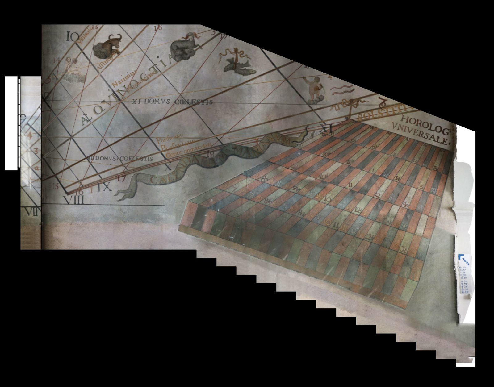
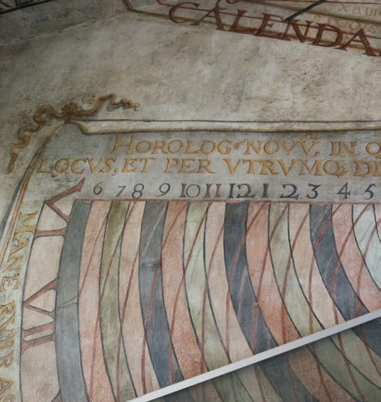
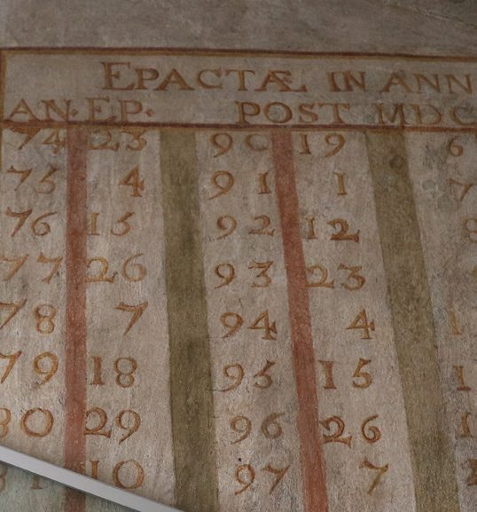
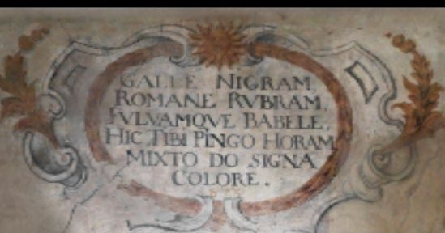
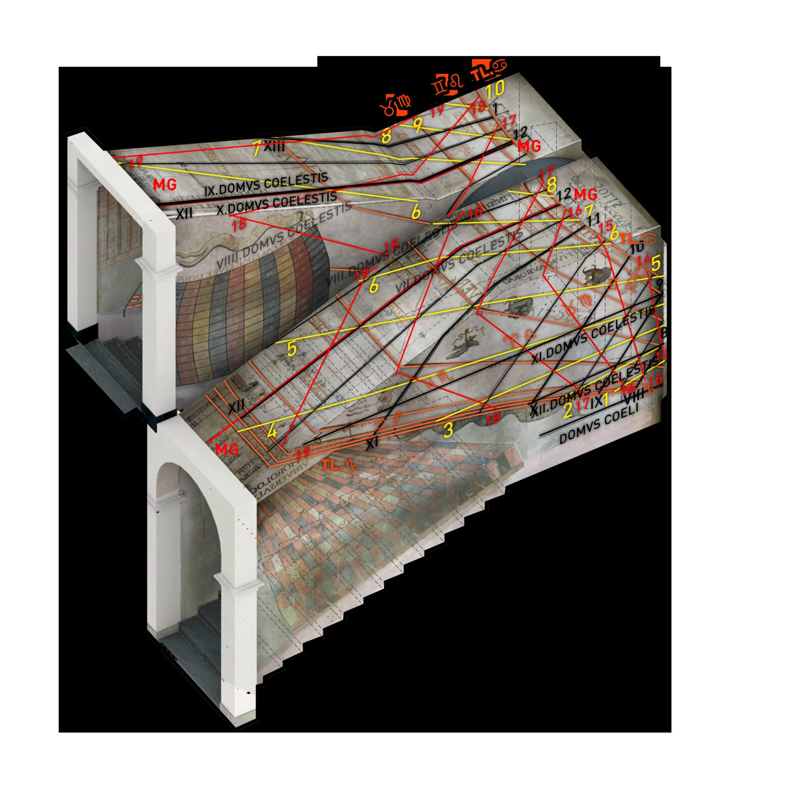

Seven tablespainted in fresco, working as calculators for time and the Moon.
Epact of 198427 — the year former pupils re-surveyed the room.
HOROLOG’ NOVUBonfa's own invention: Moon from Sun, Sun from Moon.
Chapter II · 4
The Fresco’s Tables & Inscriptions
Seven painted calendars, a home-made lunar computer, and a wall of Latin that explains its own sky.
The fresco is not only lines for the moving light. Bonfa also painted a set of tables — mathematical instruments in paint — that let an observer convert what the light spot says into other times, dates and lunar data. The survey identified and reconstructed each one.

iThe calendars and clocks
- HOROLOGIVM VNIVERSALE (Universal Clock) — west wall. A trapezoidal board of 24 columns × 8 rows; each column is a quarter-hour, so the whole board spans 6 hours. Used to read off the time in cities of the Jesuit network — the worked example converts 10½ h at Grenoble to 12½ h at Jerusalem (32° 53′ E of Paris, +2 h 12 min).
- CALENDARIVM MARIANVM (Calendar of Mary) — west wall. Marian feasts marked where the reflected light falls: Visitatio (2 Jul), Assumptio (15 Aug), Nativitas (8 Sep), Annuntiatio (25 Mar), Purificatio (2 Feb), Praesentatio (21 Nov), Immaculate Conception (8 Dec).
- CALENDARVM SOC. IESV. (Calendar of the Society of Jesus) — central east wall. Feast days of notable Jesuits; two names still legible — St Francis Xavier (3 Dec) and Father Régis.
- HOROLOG’ NOVU IN QUO LUNAE PER SOLEM — central east wall. Bonfa's own invention for finding the Moon from the Sun and vice versa: 17 concentric semicircles enclosing 16 colour zones (red, green, red, blue…), numbers read in pairs 1–16, 2–17 … 15–30 for the Moon's age.
- NOVUM KALENDER CIVIL LVNAE (New Moon Civil Calendar) — central west wall, with a table of epacts. Its banner: “add to the lunar day the epact of the year, exclude thirty-one months out of two, and the sum will teach you the day of the Moon.”
- Tables of Epacts — east wall, headed EPACTAE ANNVAE POST ANNVM MCVILXXIV (annual epact since 1674), with a companion table valid 1984–2022 added by former pupils. The epact of 1984, when that study was made, was 27.
- CALENDARIVM REGIVM (King's Calendar) — east wall. Events of the reign of Louis XIV — the War of Devolution (1667–68), the Flanders campaigns, the captures of Lille, Dole, Besançon.


iiThe Latin, translated
The room is lined with inscriptions that explain its own astronomy. A sample from the thesis's translation table:
- DOMVS COELESTIS
- the heavenly houses (the ceiling)
- INITIVM AVRORAE
- start of the day
- FINIS CREPVSCVLI
- end of dusk
- ORTVS / OCCASVS SOLIS
- sunrise / sunset
- AEQVINOCTIA
- equinox
- MANE RVBRAS HORAS…
- “in the morning count the red hours (of the Moon), and in the evening the black”
hic tibi pingo horam: mixto do signa colore.
iiiThe colour code

The lines themselves are keyed by colour — the scheme this site borrows for its margins:
- black — French / astronomical hours (civil time);
- yellow — Babylonian hours since sunrise;
- red — Italian hours since sunset;
- bold black / blue — limits of the twelve astrological houses;
- red + yellow — the system of solar declinations.
The same black / red / yellow scheme appears at Saint-Antoine-en-Vienne — one more hint, still unproven, that Bonfa made both dials.
